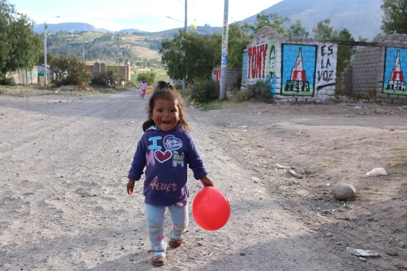
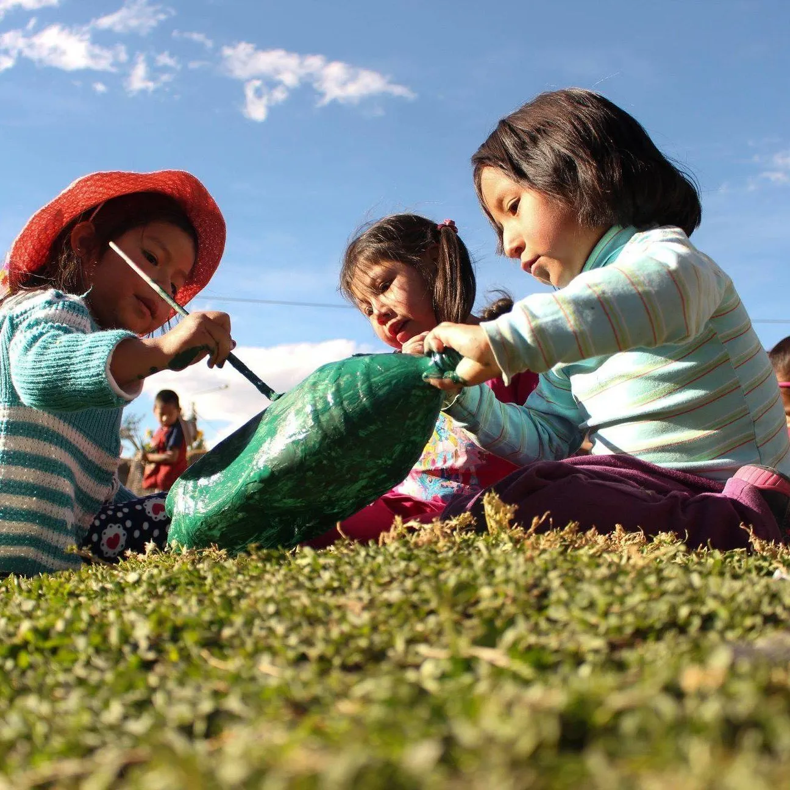

3 programas · 24 comunidades
Proyectos en Comunidades
Intervención integral desde la infancia hasta la juventud en las zonas más vulnerables de Ayacucho.
Programas de Transformación
Nuestro enfoque se divide en tres pilares fundamentales.

01
Soporte Psicosocial
Terapia individual y talleres familiares para reconstruir la confianza.

02
Refuerzo Escolar
Tutorías especializadas para niños en riesgo de deserción.
03
Talleres Preventivos
Habilidades blandas y liderazgo para el desarrollo personal.
Alcance Geográfico
Mapa de Impacto en Ayacucho
Intervenimos en 24 comunidades vulnerables distribuidas en las zonas urbanas y periurbanas de la región.
Calculadora de impacto
Haz tu impacto ahora →
¿Cuánto puede cambiar tu donación?
Cada contribución tiene un impacto directo y medible en la vida de un joven.
€15
Materiales escolares para un niño durante un semestre completo
€50
Un mes de formación técnica en cocina para un joven en el HTC
€100
Una beca mensual completa: alimentación, materiales y transporte